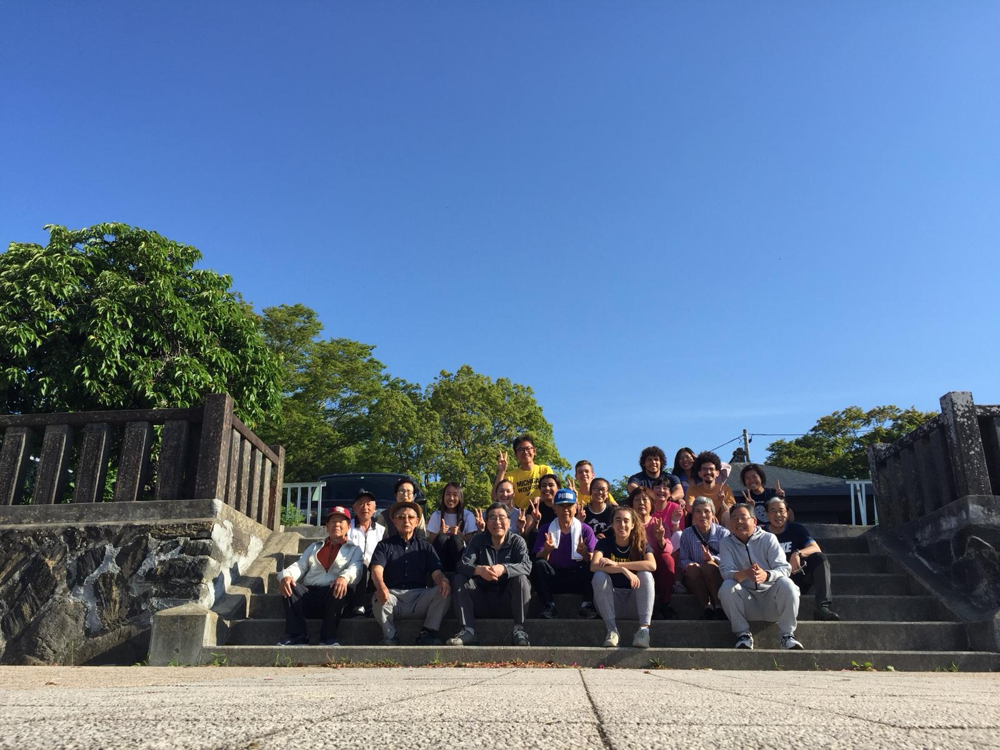

I went to Japan for a study abroad trip during my
junior year of undergrad.
I went with fourteen other students
for a full month, and it was the best month of my life.
Most of
our trip was spent in Ishinomaki,
but we also went to Tokyo several times.
Here are my tips if you're planning to travel
to Japan:
Bring clothes that are warm but don't show too much skin,
master a couple
of Japanese phrases for basic communication,
and definitely try Taiyaki (a fish-shaped donut)!


